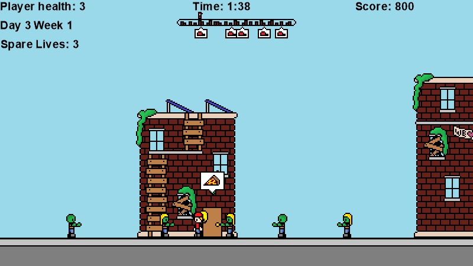

It's the zombie apocalypse, but that won't stop this pizza shop from meeting its 30-minute guarantee! Enter the shoes of the shop's trusted pizza delivery girl as you rush to make your route on time, while fighting off zombies with nothing but a spatula! Don't take too long; the zombies come out in droves past sun-down!
Apocalyptic Pizza Dash was a game I made with some friends/classmates as a project for a class in 2016. We were assigned the task of designing and developing a video game from the ground up, and completing it within a semester. This is the result of that assignment.
My efforts were devoted to architecting the code, and doing a lot of gameplay programming; I am responsible for getting climbing, attacking, jumping, and scrolling the screen working properly, as well as programming the interactions between objects.
The game was developed using the MonoGame library with C#.
The team consisted of myself, Christopher Schiff, Eleanor Post, and Isabella Verbraak.
